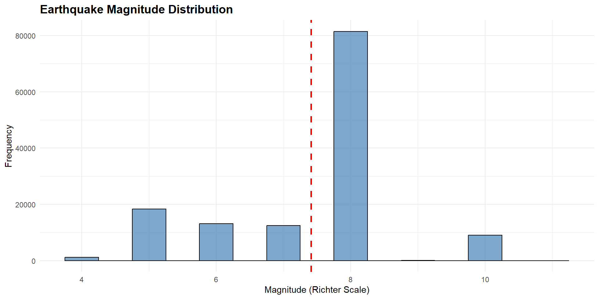
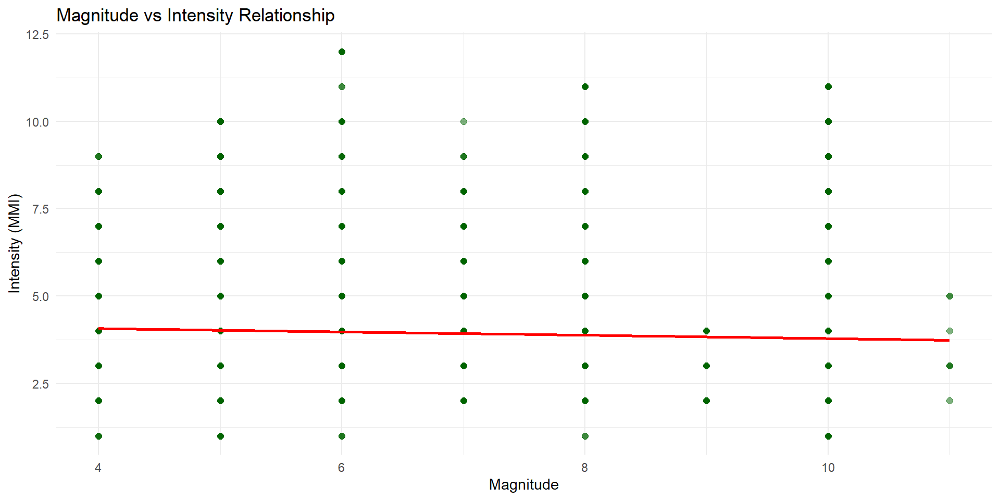
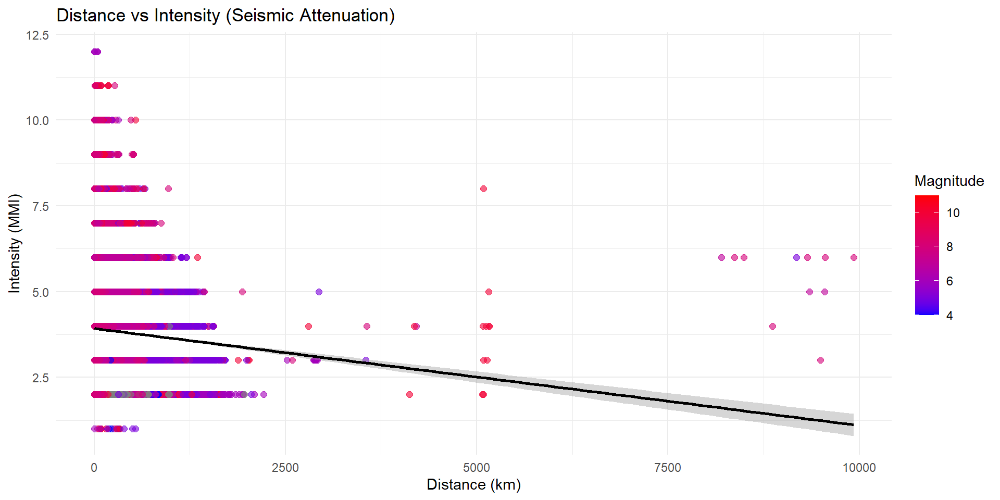

| Metric | Value |
|---|---|
| Mean | 7.41 |
| Median | 8.00 |
| Std Dev | 1.32 |
| Min | 4.00 |
| Max | 11.00 |
Earthquake Data Analysis
USA Country
Khmiri Haroun
Professor: Dr.Khmaies abbdallah
2026-01-07
Project Overview
- Dataset: Earthquake recordings
- Region: USA States
- Observations: 142083 earthquake events
- Recording Stations: 19416 locations across 50 states
- Distance Range: 0 to 9930 km
Research Questions
- How are earthquake magnitudes distributed?
- What is the geographic pattern of recordings?
- How does earthquake intensity change with distance from epicenter?
- What are the correlations between magnitude, distance, and intensity?
Magnitude Distribution
Mean Magnitude: 7.41 | Range: 4 to 11
Magnitude Summary Statistics
Recording Locations (Top 10)

Geographic Coverage (Top States)
| State | Observations |
|---|---|
| CA | 69464 |
| WA | 8876 |
| HI | 5431 |
| MT | 4437 |
| AK | 4359 |
| NY | 3173 |
| IL | 3162 |
| NV | 3015 |
| ID | 2553 |
| OR | 2483 |
Geographic Coverage (Additional States)
| State | Observations |
|---|---|
| MO | 2378 |
| ME | 2193 |
| UT | 1839 |
| CO | 1740 |
| TN | 1655 |
| KY | 1646 |
| AR | 1483 |
| MA | 1430 |
| PA | 1309 |
| IN | 1300 |
Total: 19416 unique stations across 67 states
Distance vs Intensity Pattern

Magnitude by Distance

Key Finding: Near distances record smaller events far distances captured the main shock (M8+)
Intensity by Magnitude and Distance (Near & Medium)
| Distance_Category | Magnitude_Group | Mean_Intensity | Count |
|---|---|---|---|
| Medium | M < 7 | 4.03 | 7155 |
| Medium | M 7-8 | 4.08 | 14635 |
| Medium | M > 8 | 2.60 | 5 |
| Medium | NA | 3.38 | 3312 |
| Near | M < 7 | 4.08 | 9812 |
| Near | M 7-8 | 4.01 | 24283 |
| Near | M > 8 | 2.20 | 5 |
| Near | NA | 3.14 | 7147 |
Intensity by Magnitude and Distance (Far & Very Far)
| Distance_Category | Magnitude_Group | Mean_Intensity | Count |
|---|---|---|---|
| Far | M < 7 | 4.00 | 5775 |
| Far | M 7-8 | 4.02 | 8775 |
| Far | M > 8 | 3.33 | 9 |
| Far | NA | 3.40 | 1699 |
| Very Far | M < 7 | 3.77 | 17495 |
| Very Far | M 7-8 | 3.95 | 13012 |
| Very Far | M > 8 | 2.43 | 7 |
| Very Far | NA | 3.41 | 3374 |
Correlation Analysis - Magnitude vs Distance

Correlation Analysis - Magnitude vs Intensity
Correlation Analysis - Distance vs Intensity
Seismic Wave Attenuation
| Distance_Category | Count | Mean_Magnitude | Mean_Intensity |
|---|---|---|---|
| Near | 44406 | 7.70 | 3.88 |
| Medium | 30868 | 7.57 | 3.97 |
| Far | 21107 | 7.40 | 3.95 |
| Very Far | 45702 | 7.03 | 3.80 |
Summary Statistics
| Variable | Mean | Min | Max |
|---|---|---|---|
| Magnitude | 7.41 | 4 | 11 |
| Distance (km) | 145.30 | 0 | 9930 |
| Intensity | 3.88 | 1 | 12 |
Key Insights from Analysis
- Magnitude Distribution: Main shock at M8 with foreshocks/aftershocks
- Geographic Pattern: Dense coverage across CA, NV, and neighboring states
- Physical Attenuation: Intensity decreases with distance from epicenter
- Data Quality: Multiple magnitude earthquakes at different distances
- Seismic Physics: Correlations confirm known seismic wave propagation patterns
Conclusions
- Main Event: Magnitude 8 earthquake on December 16, 1948 in Lake Tahoe region
- Extensive Network: 200+ observations recorded across multiple states
- Physics Confirmed: Seismic waves lose intensity with distance
- Data Quality: High-quality recording of a major earthquake event
- Research Value:studying seismic wave propagation
Thank You
Earthquake Analysis Project